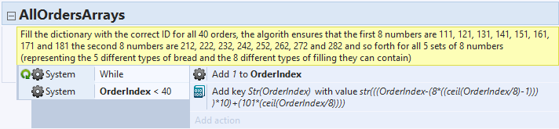
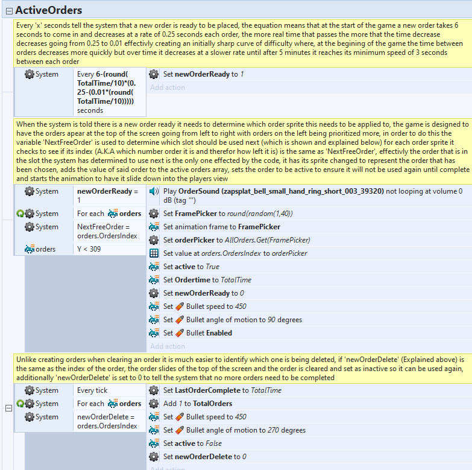

The making of a sandwich maker
For my first assignment I was tasked to make a game in Construct 2 and I decided to make an arcade game about making sandwiches. Although it is made in Construct 2, with use of loops, arrays and programming logic I feel proud of how optimized I could make a simple game like this. Below I'll detail the systems in place, how the game works, and how it all comes together as a whole.
One of the key systems in the game involves checking the ID of any made sandwich against an array of all possible orders. Unlike regular programming languages, in Construct 2 you cannot declare an array with values inside so the values have to be added manually which would usually require one line per entry which would be very inefficient. Instead of doing this I managed to assign every value of the array using a loop containing a one line equation that uses the current itteration counter to calculate a number that is assigned to each index sequentially. I won't go fully into how the algorithm works as it is partially explained in the comment but to put it simply, the itteration number is multiplied by 101 a certain number of times (which is the itteration counter divided by 8 after the remainder is removed). After that, this said remainder is multiplied by 10 and added to the total value which is assigned to the index equal to the itteration value.
The other complex system worth covering in the game is the tracking of what orders are currently active on screen. The first section controls when the tasks are instantiated and uses an equation that decreases the time between instantiations depending on how long the player has lasted which is further detailed in the comment. What is more interesting is the section that tracks the position that the order will be in and what order it will be. A random number between 1 and 40 is generated and used to pick one of the possible orders, each order object has all 40 different sprites attached as frames so the corresponding frame is selected for the order. The randomly generated number is also used to get the correct ID from the array mentioned above and that number is assigned to a different array containing the current orders on screen. The position the order is spawned in and the index of the array that the ID is added to are both calculated by checking what orders (that have not already been completed) have been instantiated and the positions they are in and (starting from the left) the next free position is then picked. When the player makes a sandwich, its' ID is saved and the final section runs every frame to see if said ID is equal to any of the ID's that are in play. If a match is detected, the order is removed and the space is freed up for a new order to fill its' space.
As Construct 2 is a fairly simple engine a lot of the other systems are also fairly simple (or have already been mentioned). Despite being a simple game in a simple engine I am quite proud of how I have managed to optimize it and make a game like this work at its' maximum potential.